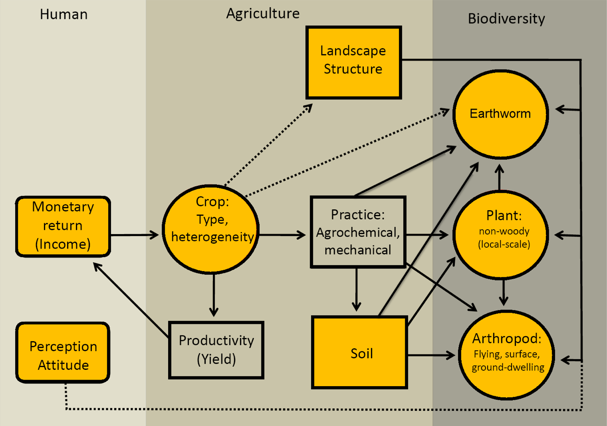
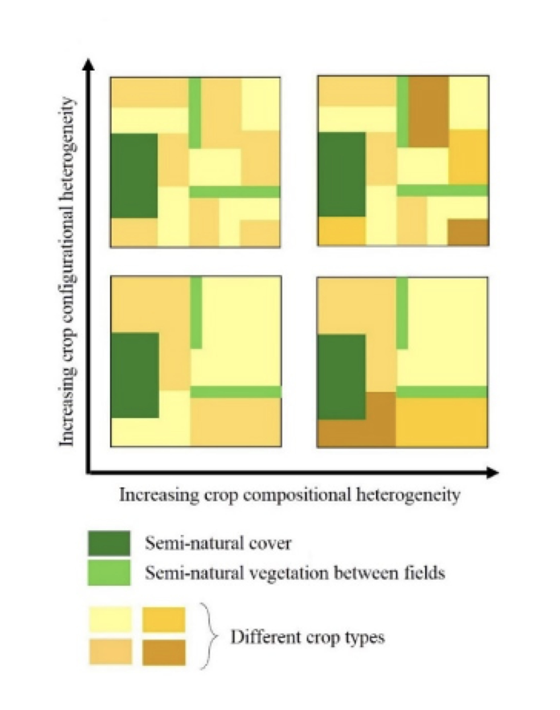
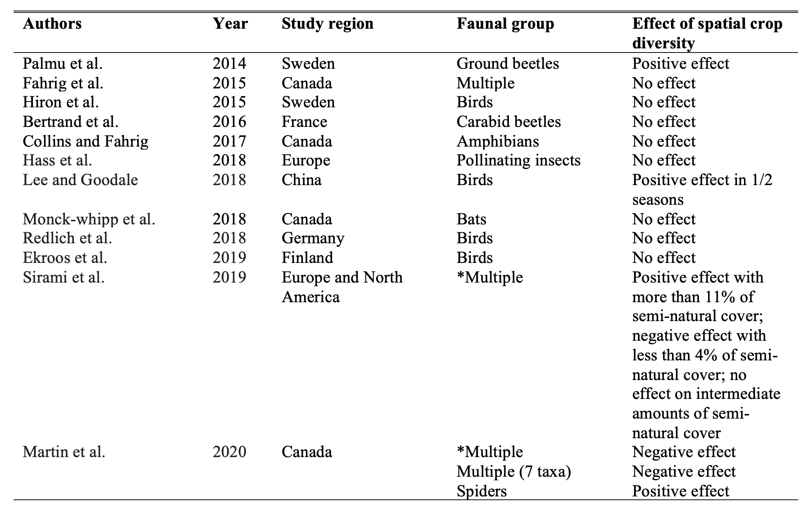
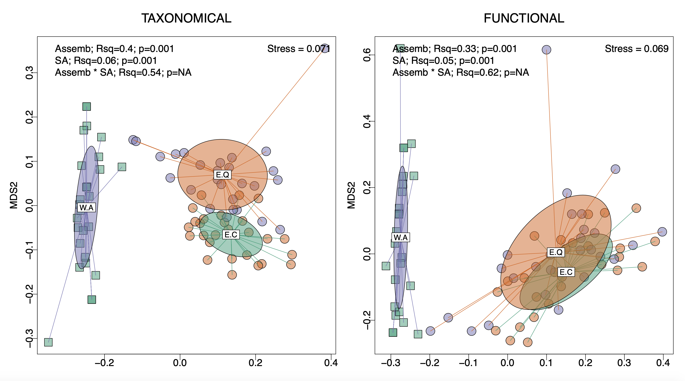

Projects
IMPORTANT: Here I will update studies that I may carry out during my PhD at ASE-NTU
17 | 09 | 2020 Last compiled: 2020-11-04
Biodiversity in agricultural landscapes:Balancing crop production and biodiversity conservation through sustainable agroecosystems
Highlights
● Biodiversity-mediated benefits for agricultural production/yield will be measured and compared in both large-scale monoculture and heterogenous smallholder farmlands.
● Two large-scale monoculture crops (rice and oil palm) and an important cash crop (cashew) that are important to both large-scale conglomerates and smallholders but cause environmental and social issues will be studied.
● The effect of crop heterogeneity (i.e. crop compositional and configurational heterogeneity) on farmland biodiversity, production, pest activities and agricultural risks, will be tested through both existing and pre-designed farmlands. ● Taxonomic-based diversity, functional diversity, multi-trophic and multi-trait diversity will be considered.
● Ecosystem service multifunctionality assessment, which includes measures of ecosystem services from human perspectives, will be researched.
● Experiments will investigate below-ground to above-ground functional communities (i.e. earthworms, soil arthropods, dung beetles, bees, butterflies, dragonflies and herbaceous plants).
1. BACKGROUND AND OBJECTIVES
Agroecosystems can be considered as terrestrial ecosystems that are heavily modified over space and time by humans for human needs (Baillod et al., 2017; Firbank et al., 2008). Although agroecosystems are often managed based on their production in an economic sense, they can also be managed to minimize environmental/ecological problems by altering farming practices and land-use patterns. Thus, the understanding and management of agroecosystems require a multi-disciplinary approach that takes into consideration both ecological and human factors. Moreover, the environmental features which affect biodiversity vary depending on taxon, functional group, species, parameter of interest, and are scale-dependent (Burgess and Maron, 2016; Gonthier et al., 2014). Consideration of multiple biological, ecological, and social measurements, as well as multiple spatial scales, is crucial to avoid biased or misleading conclusions.

Figure 1. Conceptual diagram of the project representing major elements and their interactions that influence biodiversity in agroecosystems. Earthworms, soil arthropods, dung beetles, bees, butterflies, dragonflies and herbaceous plants are selected as taxa for the measure of biodiversity because of their role in ecosystem services and the ease of sampling (see Fahrig et al., 2015; Phillips et al., 2019). Solid and dotted arrows indicate direct (and strong), and indirect effects, respectively. Each box or circle represents abiotic or biotic elements in agroecosystems, respectively. Two elements belonging to the human dimension are considered neither abiotic nor biotic and indicated with a curved square box. Yellow boxes are elements that will be directly surveyed in this project. Farming practice and productivity will be indirectly measured through soil analysis and social survey.
Agroecosystems, like all other ecosystems, consist of varying biotic and abiotic elements, but as human-managed systems, also include social aspects (Fig. 1). The human factors affecting agroecosystems largely consist of three elements: culture, economic benefit and farmers’ perception of flora and fauna on their land. When the geographical scale of a study is narrow, cultural aspects are less varied within the study area. However, variation in the other two human dimensions can affect biodiversity directly or indirectly by (a) determining the types of crops planted, thereby altering farming practices, and by (b) influencing farmers’ willingness to accept policies or practices associated with biodiversity conservation.
The biological elements of an agroecosystem are likewise complex (Fig. 1). The type and diversity of crops will significantly impact soil properties, non-crop plants at field margins, and animal biodiversity. Landscape features (compositional and configurational) of crop and non-crop land covers will also influence biodiversity. Crop type and diversity will determine crop productivity, significantly affecting farmers’ financial gains. Further, these different elements of an agroecosystem can have a direct or indirect effect on each other.
Given this complexity, the properties of agroecosystems cannot be fully understood by analyzing each element independently. A holistic approach is necessary, synthesizing the various elements and their interactions. This is necessary to determine management options that find compromises between different conflicting needs, such as balancing crop production and biodiversity conservation. This can be accomplished with comprehensive scientific knowledge about biodiversity-environment relationships and advanced statistical modeling.
This project aims to build a comprehensive understanding on biodiversity-environment relationships in agricultural landscapes, by considering not only socio-economic aspects but also multiple taxa from multiple trophic levels, different ecological levels (species and community), and multiple spatial scales (local and landscape). The environmental features the study focuses on are dominant cash crops (i.e. rice, oil palm, cashew), crop heterogeneity, composition and configuration of field margins, characteristics of natural/semi-natural vegetation in other non-croplands, soil fertility, and landscape-level characteristics. The ultimate goal of this project is to construct a model based on scientific information acquired from our data and previous studies that can (a) identify important environmental features driving variations in biodiversity, (b) predict future biodiversity changes in agricultural landscapes, and (c) eventually determine potential management plans for sustainable agricultural landscapes, balancing crop production and biodiversity in agroecosystems.
2. THE SIGNIFICANCE AND RATIONALE OF THE RESEARCH
Limiting further expansion of agricultural lands and keeping lands out from production would likely benefit biodiversity conservation (e.g. Egan and Mortensen, 2012; Norris, 2008; Scharlemann et al., 2005). However, pressure to increase food production to fulfill the demands of the continued growth of the human population make such conservation-motivated recommendations impractical, and it leads to intensive agriculture practices worldwide, especially in developing countries (FAO 2016; Martin et al., 2020). Intensive agriculture harnesses most of an ecosystem’s productive capacity, transforms natural habitats and requires a high input of agrochemicals, thus posing a serious threat to biodiversity (Laurance et al., 2014; Tilman et al., 2001) and ecosystem function (Altieri, 1999; Tscharntke et al., 2012; Zhang et al., 2007). Hence, more detailed studies of the effect of scale and intensity of agriculture on biodiversity are required in order to design and implement agro-environment schemes that balance productivity and biodiversity (Batáry et al., 2015; Kleijn and Sutherland, 2003; Scherr and McNeely, 2008; Sirami et al., 2019).
One of the key factors in restoring or maintaining biodiversity in agricultural landscapes is environmental heterogeneity at multiple spatial and temporal scales (Benton et al., 2003; Fahrig et al., 2011; Tscharntke et al., 2005). Such heterogeneity has been emphasized to improve the effectiveness of agro-environmental schemes in Europe (Benton et al., 2003; Smith et al., 2010). A greater diversity of plants, birds, and arthropods are often found in heterogeneous agricultural landscapes, compared to homogeneous landscapes (Bassa et al., 2011; Lee and Martin, 2017; Molina et al., 2014). However, several studies suggest that the effect of environmental heterogeneity and other characteristics can vary, depending on how biodiversity is measured: i.e. taxonomic, functional, or phylogenetic diversity (Lee and Martin, 2017; Meynard et al., 2011). These studies support the growing consensus that use of trait-based measures of diversity (e.g. functional diversity) combined with taxonomic diversity (e.g. species richness) can improve our understanding of the interactions between biodiversity and environmental constraints (Cadotte et al., 2011; Mouchet et al., 2010; Provosta et al., 2020).
Environmental heterogeneity in agricultural landscapes is traditionally assessed based on different semi-natural/natural vegetation cover types. Recently, however, ecologists have started paying attention to whether cropland heterogeneity (the farmed component of the landscape) can also be a part of environmental heterogeneity and whether it influences biodiversity positively (Fahrig et al., 2011; Vasseur et al., 2013). Intensified agricultural landscapes tend to be dominated by a few crop types planted in large-scale monocultures (Kareiva et al., 2007; Malézieux et al., 2009), whereas crop heterogeneity is higher in less intensive landscapes. Cropland heterogeneity may be particularly important in situations where patches of semi-natural/natural vegetation are too small to support viable population sizes of species. They are also a component of the agricultural landscape that can be shaped by policy, and it has been argued that smallholder cropping systems may be beneficial to local economics, as well as the environment (Malézieux et al., 2009). Hence, increasing crop heterogeneity could be a way in which to both positively affect crop production (and farmers’ livelihoods) and biodiversity conservation.
Yet how crop heterogeneity influences biodiversity may not be a simple question to answer. Farmers use different practices for different crops: the type and amount of agrichemical, cultivation methods, and management of non-crop vegetation at field margins change spatially and temporally with crop types (Vasseur et al., 2013). Even the same crop can be managed differently. Characteristics of the matrix in which the cropland is embedded, including landscape features, and dominant crop types, also affect biodiversity (Molina et al., 2014; Poggio et al., 2013). Thus, the effect of crop heterogeneity may be indirect, or confounded with the effects of other environmental characteristics. Considering wide variations in both landscape features and the type and number of crops among previous studies, results have been inconsistent. Some studies have reported significant positive effects of cropland heterogeneity on flora and fauna, whereas others have not (see Table S1). Underlying mechanisms or processes are also rarely considered in these studies, which would require a full description of crop types, related farming practices, and spatial features at both the local and landscape scale. Thus, several complications must be confronted to fully understand the role of crop heterogeneity plays in conservation management for intensified agricultural landscapes.
By using both large-scale and smallholder dominated heterogeneous rice plantations in Sri Lanka and oil palm plantations in Indonesia as the study cases, we propose this research project, which will contribute to understanding the relationship between biodiversity, cropland heterogeneity, and other characteristics of agricultural landscapes, to determine efficient conservation management strategies for agricultural landscapes in tropical Asia. Sri Lanka is a tropical island with 46 agro-ecological regions across three different climatic zones (i.e. 15 wet, 11 dry and 20 intermediate) (SLBCHM 2020), and belongs to the Western Ghats and Sri Lanka biodiversity hotspot (Myers et al., 2000). Double rice cultivation is consistent throughout the island as the major staple crop (AESD-DCS 2019). Consequently, it has been noted that fertilizer (especially nitrogen application) and pesticide use, is much higher and thus, agriculture intensification is an important environmental issue in Sri Lanka. On the other hand, Indonesia is the world’s largest producer of oil palm with the fourth largest population in the world (Santika et al., 2020). It also belongs to the Sundaland and Wallacea biodiversity hotspots and recognized as a megadiverse country (von Rintelen et al., 2017). Yet its biodiversity faces a myriad of threats due to continuing expansion of oil palm agriculture. This brings up numerous social and environmental costs, including deforestation (Gaveau et al., 2018), water scarcity and pollution (Merten et al., 2016; Obidzinski et al., 2012), and heightened risk of fire and concomitant emissions of smoke and pollution due to expansion of plantations on peatland (Carlson et al., 2013; Marlier et al., 2015). However, high global demand and its contribution for regional economic development and rural poverty alleviation will further expand oil palm plantations (Sayer et al., 2012). Therefore, it is a pressing matter to develop sound management plans that assure the sustainability of oil palm plantations through organizations, e.g. the Roundtable on Sustainable Palm Oil (RSPO) - a voluntary certification body to promote more sustainable production.
The overall project will address the following key questions: What are the main environmental characteristics influencing biodiversity in agricultural landscapes in our study regions? Can crop heterogeneity contribute to enhanced biodiversity in such landscapes? How do socio-economic factors (famers’ interest and income) affect choice of crop, farming practices (large-scale versus smallholder), and biodiversity? And ultimately, what are the potential management options that balance crop production and farmers’ livelihoods with biodiversity conservation in our study regions? Answering the last question is the final goal of this project, which requires the synthesis of answers from the other questions. To do so, we will adopt state-of-the-art modeling methods such as “ecological-economic land-use change model” (see Dislich et al., 2018), Bayesian hierarchical models and Bayesian networks, as well as trait-based measures of biodiversity. This project emphasizes a holistic approach that will facilitate our understanding on the mechanisms and processes behind the patterns observed. More importantly, outcomes from this project will provide scientific bases to policymakers’ decision-making to create agricultural landscapes that work for both biodiversity and people (see Kremen and Merenlender, 2018).
3. NOVELTY OF THE PROJECT
Promoting biodiversity in agroecosystems has often focused on the retention of non-crop, native vegetation at different scales. However, to retain non-crop vegetation, farmers must forgo cultivating crops in some areas, which is often an economical cost. One potential alternative might be if crop heterogeneity itself increases biodiversity, but this hypothesis has been weakly supported despite a lot of recent research in temperate climates, where large-scale agriculture is predominant, and biodiversity is relatively low. We therefore will perform this study in tropical regions where small holders are predominant, and there is a high diversity of both crops and natural biota.
Biodiversity in agroecosystems also depends on farm management practices (e.g. annual/perennial crop, fertilizer use, herbicide use, insecticide use, tile drainage), but studies of biodiversity in relation to both landscape variables and farm management are rare (Martin et al., 2020; Weibull et al., 2003). Thus, this research proposes studying the effects of both farmland heterogeneity and farming practices (large-scale monoculture versus smallholder heterogenous) on biodiversity.
The link between biodiversity and the ecosystem services of pollination and pest-control is strong (Dainese et al., 2019; Losey and Vaughan, 2006; Saunders et al., 2016; Woodcock et al., 2019), and therefore biodiversity may translate into higher productivity and/or less risk from pests for farmers (Bowman and Zilberman, 2013; Lin, 2011). However, it is not clear enough to make quantitative decisions on how much production can be increased or what percentage of risk can be reduced by biodiversity-mediated agricultural practices. Therefore, this research is designed to monitor such increments or discernments of agricultural production and risks quantitatively. This study will also test all the experiments in both existing and pre-designed farmlands, which will enable a robust conclusion.
Furthermore, as farmers’ interest and attitudes significantly influence the decision-making process on what to plant and how to manage both crops and non-crop areas, integrating socio-economic factors is essential to develop sound management options, as well as to understand agroecosystems itself. This project is designed to incorporate the major factors that influence agroecosystems, including both ecological elements and socio-economic aspects, which is rarely done in agricultural studies.
The main aim of this project is the synthesis of knowledge and the application of scientific findings for future management. Outcomes from the analysis will advance scientific understanding of agroecosystems and help construct more effective policies that ensure sustainable agricultural landscapes in Asia where smallholder agriculture predominates.
4. QUESTIONS AND HYPOTHESIS
- The effects of farmland heterogeneity on the biodiversity and functional diversity of below-ground to above-ground communities
4. 1. 1. Question
How farmland heterogeneity effects vary between different functional groups and to what degree?
4. 1. 2. Hypotheses
The effect of compositional and configurational components of farmland heterogeneity vary between different functional groups in different degrees: positive, negative or neutral.
Responses to farmland heterogeneity might differ between biodiversity and functional diversity or might solely be driven by species richness.
Farmland heterogeneity can be seen as having two key components: (i) crop compositional heterogeneity (the number and evenness of crop types) and (ii) crop configurational heterogeneity (spatial arrangement of crop fields, Fahrig et al., 2011). Theoretically, farmland heterogeneity increases biodiversity because spatial heterogeneity increases opportunities for niche partitioning hence promoting species richness (Tews et al., 2004). Much work has been done to explore the impact of heterogeneity on farmland biodiversity, particularly the presence of non-crop areas (Fahrig et al., 2015; Hass et al., 2018; Sirami et al., 2019). Less effort has been expended looking specifically at whether heterogeneity in the crop lands themselves can retain biodiversity and whether small scale agriculture, with a variety of crops, can thus have a conservation utility (Fahrig et al., 2015; Lee and Goodale, 2018; Sirami et al., 2019). At the same time, the scale of croplands is a characteristic that policy makers can directly influence (Balmford et al., 2012), and indeed, in some cases, small-scale heterogeneous crops may be profitable and low risk to farmers (see Malézieux et al., 2009). Therefore, more research is necessary to understand the effects of environmental heterogeneity, with a focus on cropland heterogeneity of farmlands (see Tscharntke et al., 2005), on biodiversity and economic productivity of the farmers.
Farmland compositional heterogeneity can be measured as the Shannon–Wiener index on the number and relative extent of different cultivated crop species, and configurational heterogeneity can be measured as the mean size of fields or cumulative field margin length.

Figure 2. Representations of farmland heterogeneity, adapted from (Sirami et al., 2019).
While farmland biodiversity is often measured by taxonomy-based species diversity (in terms of richness and evenness), it is also important to look at functional diversity – i.e. functional richness, functional evenness and functional divergence (Cadotte et al., 2011; Kremen, 2005; Schleuter et al., 2010). The functional diversity within the functional unit (ecosystem or niche/Hutchinson’s niche or habitat) is referred to as the different types of functional groups in a community important to its structure and dynamic stability (Schleuter et al., 2010), and it is measured by quantifying the distribution of functional groups in that community (Mouchet et al., 2010; Villéger et al., 2008). Also, studying multiple taxa from different trophic levels will make the findings more robust and advanced.
A range of morphometric traits will be considered for measuring functional diversity, which related to dispersal ability, resource consumption, disturbance avoidance and tolerance, microhabitat usage and pollinating ability etc.
4. 2. Farmland heterogeneity to reduce the agricultural risks
4. 2. 1. Question
Can farmland heterogeneity be adapted to reduce the agricultural risk? And can less frequent crops, such as vegetables, increase biodiversity and reduce the agricultural risks when used in conjunction with monoculture crops?
4. 2. 2. Hypotheses
Inclusion of low-risk crop types might ensure famers’ livelihoods by providing stable yield
Understanding the importance of spatial co-existence between different types of farmlands, which will advance the knowledge of crop identity, might boost the farmland biodiversity as opposed to if crop types are chosen randomly
4. 2. 3. Description
Heterogeneity of farmlands that the farmer produces may be an effective way to help farmers deal with several types of agricultural risks such as price and yield risk (see Bowman and Zilberman, 2013). Different biological and geophysical factors can cause yield risks; e.g. water availability (floods or droughts), soil fertility and pest or weed infestations. On the other hand, price risk is the risk whereby the price received for their production will be higher or lower than average in a given year.
We aim to study crops with varied degrees of risk featured in a heterogenous farmland and obtain data on price and yield risk by market and social surveys. Subsequently, the optimal portfolio of crop types to co-exist can be found by taking into account the means and variances of market prices (for price risk) of each crop type and/or climate and crop identity (for yield risk) data. If the risks (yield or price) for two crops are poorly correlated, then we propose farmers can grow those crop types together.
4. 3. The effects of farmland heterogeneity on pest controlling and yield
4. 3. 1. Question
Do heterogeneous farmlands promote natural pest control? And can they boost the quality of the production?
4. 3. 2. Hypotheses
An effective natural enemy population for pest controlling can be maintained by increasing farmland heterogeneity.
Natural pest controlling might increase the quality of the crop types and eventually, will increase the quality of the production.
4. 3. 3. Description
Pest controlling is one of the key factors that farmers must consider since pests can severely reduce the production capacity of any farmland. However, pesticides do not discriminate between pests and beneficial biota and and can harm crucial wildlife while causing farmers to expend a considerable amount of money and effort to purchase and utilize them. If farmland heterogeneity can deliver pest controlling benefits effectively by increasing the natural enemy population, that might boost farmers’ income and willingness to increase farmland heterogeneity.
Natural enemies of the farmlands might also increase the quality of the crop types, which can be measured by using different proxies: e.g. longevity of flower and plant/crop; size of flower, seeds, fruits and plant/crop; number of seeds per fruit; number of flowers per plant/crop; leaf damage and yield. Moreover, we propose this to be tested through pre-designed farmlands __ making the farmlands more heterogenous, which will provide a more accurate and advanced comparison to identify the best farming practices where farmers’ goals and conservation goals will be achieved together in the same landscape.
4. 4. Biodiversity-mediated benefits for crop production in smallholder-dominated heterogeneous versus large-scale monoculture farming __ Rice and cashew plantations
4. 4. 1. Question
Are biodiversity-mediated benefits for production in rice and cashew plantains higher in smallholder-dominated heterogenous farmlands than large-scale monoculture farmlands?
4. 4. 2. Hypotheses
Biodiversity-mediated benefits for crop production (i.e. rice and cashew) might be higher in heterogenous farmlands than monoculture farmlands.
Within-plant yield of cashew might be higher in heterogenous farmlands than when it is monocultured, thus the productivity might not be co-related in these two systems.
4. 4. 3. Description
The ultimate goal of intensive farming is to have a profitable production/yield. This often leads farmers to carry out large-scale monoculture planting. However, heterogeneous farmlands might be more profitable for farmers when considering their input values (e.g. fertilizer, machinery, pest controlling etc.) against output values (i.e. yield and monetary) - see 4.2 and 4.3.
There are evidences that the productivity of a farmland can be boosted by managing a high level of farmland biodiversity due to the ecosystem services (e.g. pollination, pest controlling) delivered by the farmland biota (Dainese et al., 2019; Woodcock et al., 2019). However, yield of monoculture farmlands is area-based, unlike that of heterogenous farmlands, hence the production is higher as compared to heterogeneous farmlands. Therefore, we will quantify the difference between input and output values of monoculture and heterogenous farmlands by using two common cash crops (i.e. rice and cashew).
4. 5. Biodiversity and economic enrichment of smallholder-dominated versus large-scale oil palm monoculture systems
4. 5. 1. Questions
Is the trade-off between ecological services/disservices and economic benefits significantly different between a smallholder-dominated oil palm monoculture system and a large-scale oil palm monoculture system?
Does the remaining the amount of non-crop vegetation and non-crop heterogeneity in oil palm monoculture systems (i.e. smallholder-dominated and large-scale) positively influence its biodiversity?
4. 5. 2. Hypotheses
The trade-off between economic benefits and ecological services/disservices might be significantly different in smallholder-dominated oil palm monoculture system as compared to large-scale monocular oil palm system
Effects of non-crop heterogeneity and amount of non-crop vegetation may positively influence the biodiversity in oil palm system, and the effect of smallholder-dominated oil palm monoculture system on biodiversity might be significantly higher in comparison to large-scale oil palm monocular system
4. 5. 3. Description
Smallholder-dominated agricultural mosaic landscapes are highlighted as model production systems that deliver both economic and ecological benefits (Clough et al., 2016). However, smallholder-dominated oil palm system has rarely been studied in terms of potential biodiversity enrichment in comparison to large-scale oil palm monoculture system (see Romero et al., 2019). Large-scale oil palm monoculture indeed will bring more monetary returns due to its scale, but causes more harm to the wild biota. In fact, it is known that palm oil is one of the primary causes of deforestation and biodiversity loss in species-rich tropical ecosystems (see Green et al., 2019). Therefore, it is important to quantify the trade-off between economic benefits and ecological benefits between these two systems, which will allow us to make robust decisions for protecting both biodiversity and its value for humanity (see Salk et al., 2020). This can be simply achieved by comparing biodiversity loss/gain with monetary return/loss of yield across different scales of oil palm monoculture plantations.
Crop heterogeneity (i.e. compositional and configurational) itself can positively influence farmland biodiversity due to spatial complexity (see Fahrig et al., 2015). However, this hypothesis may not be directly applicable for monoculture systems where a single species of crop is being cultivated. Another possible way to look at this hypothesis in monoculture systems is studying the amount of remaining non-crop vegetation [i.e. semi-natural/natural vegetation (e.g. isolated trees, shrubs, herbaceous plants, open water)] and its heterogeneity in the landscape. Biodiversity in farmland landscapes also depends on farming practices (Martin et al., 2020). Therefore, studying this idea in both smallholder-dominated and large-scale oil palm system will provide a comprehensive understanding of the impact of both systems.
4. 6. The relationship between farmland heterogeneity, multi-trophic diversity and multi-trait diversity, yield and ecosystem multifunctionality
4. 6. 1. Question
Can ecosystem multifunctionality be advanced by farmland heterogeneity?
4. 6. 2. Hypothesis
The relationship between ecosystem multifunctionality and multi-trophic diversity might be positive in heterogenous farmlands.
The relationship between ecosystem multifunctionality and multi-trait diversity might be positive in heterogenous farmlands.
The relationship between ecosystem multifunctionality and yield might be significantly higher in heterogenous farmlands.
4. 6. 3. Description
This idea is to combine the results of all the above research questions and hypotheses, which will enable robust decision-making for biodiversity conservation while ensuring the production of farmlands. Different taxa respond to the major components of crop heterogeneity (i.e. compositional and configurational heterogeneity) differently. Some benefit from configurational heterogeneity, while others benefit from compositional heterogeneity (Priyadarshana et al., 2020). Since this project will consider multiple taxa from multiple trophic levels, it will enable a measure of a synthetic index of multi-trophic diversity (see Sirami et al., 2019) and multi-trait diversity (see Provosta et al., 2020).
To measure ecosystem multifunctionality, we first will identify different ecosystem functions or properties, which can deliver different ecosystem or socio-economic services; e.g. root biomass (belowground productivity), natural enemy abundance (pest control), pollinator abundance (pollination), yield and profit (farmers’ livelihoods) etc. Based on these functions or properties, multifunctionality will be measured.
References
AESD-DCS (Agriculture and Environment Statistics Division of the Department of Census and Statistics), 2019. Paddy statistics, Sri Lanka [WWW Document]. URL http://www.statistics.gov.lk/agriculture/Paddy Statistics/PaddyStats.htm
Altieri, M.A., 1999. The ecological role of biodiversity in agroecosystems. Agric. Ecosyst. Environ. 74, 19–31. https://doi.org/10.1016/S0167-8809(99)00028-6
Baillod, A.B., Tscharntke, T., Clough, Y., Batáry, P., 2017. Landscape-scale interactions of spatial and temporal cropland heterogeneity drive biological control of cereal aphids. J. Appl. Ecol. 54, 1804–1813. https://doi.org/10.1111/1365-2664.12910
Balmford, A., Green, R., Phalan, B., 2012. What conservationists need to know about farming. Proc. R. Soc. B Biol. Sci. 279, 2714–2724. https://doi.org/10.1098/rspb.2012.0515
Bassa, M., Boutin, C., Chamorro, L., Sans, F.X., 2011. Effects of farming management and landscape heterogeneity on plant species composition of Mediterranean field boundaries. Agric. Ecosyst. Environ. 141, 455–460. https://doi.org/10.1016/j.agee.2011.04.012
Batáry, P., Dicks, L. V, Kleijn, D., Sutherland, W.J., 2015. The role of agri-environment schemes in conservation and environmental management. Conserv. Biol. 29, 1006–1016. https://doi.org/10.1111/cobi.12536
Benton, T.G., Vickery, J.A., Wilson, J.D., 2003. Farmland biodiversity: is habitat heterogeneity the key? Trends Ecol. Evol. 18, 182–188. https://doi.org/10.1016/S0169-5347(03)00011-9
Bertrand, C., Burel, F., Baudry, J., 2016. Spatial and temporal heterogeneity of the crop mosaic influences carabid beetles in agricultural landscapes. Landsc. Ecol. 31, 451–466. https://doi.org/10.1007/s10980-015-0259-4
Bowman, M.S., Zilberman, D., 2013. Economic factors affecting diversified farming systems. Ecol. Soc. 18, 33. https://doi.org/10.5751/ES-05574-180133
Burgess, E.E., Maron, M., 2016. Does the response of bird assemblages to fire mosaic properties vary among spatial scales and foraging guilds? Landsc. Ecol. 31, 687–699. https://doi.org/10.1007/s10980-015-0275-4
Cadotte, M.W., Carscadden, K., Mirotchnick, N., 2011. Beyond species: Functional diversity and the maintenance of ecological processes and services. J. Appl. Ecol. 48, 1079–1087. https://doi.org/10.1111/j.1365-2664.2011.02048.x
Carlson, K.M., Curran, L.M., Asner, G.P., Pittman, A.M.D., Trigg, S.N., Marion Adeney, J., 2013. Carbon emissions from forest conversion by Kalimantan oil palm plantations. Nat. Clim. Chang. 3, 283–287. https://doi.org/10.1038/nclimate1702
Clough, Y., Krishna, V. V., Corre, M.D., Darras, K., Denmead, L.H., Meijide, A., Moser, S., Musshoff, O., Steinebach, S., Veldkamp, E., Allen, K., Barnes, A.D., Breidenbach, N., Brose, U., Buchori, D., Daniel, R., Finkeldey, R., Harahap, I., Hertel, D., Holtkamp, A.M., Hörandl, E., Irawan, B., Jaya, I.N.S., Jochum, M., Klarner, B., Knohl, A., Kotowska, M.M., Krashevska, V., Kreft, H., Kurniawan, S., Leuschner, C., Maraun, M., Melati, D.N., Opfermann, N., Pérez-Cruzado, C., Prabowo, W.E., Rembold, K., Rizali, A., Rubiana, R., Schneider, D., Tjitrosoedirdjo, S.S., Tjoa, A., Tscharntke, T., Scheu, S., 2016. Land-use choices follow profitability at the expense of ecological functions in Indonesian smallholder landscapes. Nat. Commun. 7. https://doi.org/10.1038/ncomms13137
Collins, S.J., Fahrig, L., 2017. Responses of anurans to composition and configuration of agricultural landscapes. Agric. Ecosyst. Environ. 239, 399–409. https://doi.org/10.1016/j.agee.2016.12.038
Dainese, M., Martin, E.A., Aizen, M.A., Albrecht, M., Bartomeus, I., Bommarco, R., Carvalheiro, L.G., Chaplin-Kramer, R., Gagic, V., Garibaldi, L.A., Ghazoul, J., Grab, H., Jonsson, M., Karp, D.S., Kennedy, C.M., Kleijn, D., Kremen, C., Landis, D.A., Letourneau, D.K., Marini, L., Poveda, K., Rader, R., Smith, H.G., Tscharntke, T., Andersson, G.K.S., Badenhausser, I., Baensch, S., Bezerra, A.D.M., Bianchi, F.J.J.A., Boreux, V., Bretagnolle, V., Caballero-Lopez, B., Cavigliasso, P., Ćetković, A., Chacoff, N.P., Classen, A., Cusser, S., da Silva e Silva, F.D., de Groot, G.A., Dudenhöffer, J.H., Ekroos, J., Fijen, T., Franck, P., Freitas, B.M., Garratt, M.P.D., Gratton, C., Hipólito, J., Holzschuh, A., Hunt, L., Iverson, A.L., Jha, S., Keasar, T., Kim, T.N., Kishinevsky, M., Klatt, B.K., Klein, A.-M., Krewenka, K.M., Krishnan, S., Larsen, A.E., Lavigne, C., Liere, H., Maas, B., Mallinger, R.E., Pachon, E.M., Martínez-Salinas, A., Meehan, T.D., Mitchell, M.G.E., Molina, G.A.R., Nesper, M., Nilsson, L., O’Rourke, M.E., Peters, M.K., Plećaš, M., Potts, S.G., Ramos, D. de L., Rosenheim, J.A., Rundlöf, M., Rusch, A., Sáez, A., Scheper, J., Schleuning, M., Schmack, J.M., Sciligo, A.R., Seymour, C., Stanley, D.A., Stewart, R., Stout, J.C., Sutter, L., Takada, M.B., Taki, H., Tamburini, G., Tschumi, M., Viana, B.F., Westphal, C., Willcox, B.K., Wratten, S.D., Yoshioka, A., Zaragoza-Trello, C., Zhang, W., Zou, Y., Steffan-Dewenter, I., 2019. A global synthesis reveals biodiversity-mediated benefits for crop production. Sci. Adv. 5, 1–14. https://doi.org/10.1126/sciadv.aax0121
Dislich, C., Hettig, E., Salecker, J., Heinonen, J., Lay, J., Meyer, K.M., Wiegand, K., Tarigan, S., 2018. Land-use change in oil palm dominated tropical landscapes — an agent-based model to explore ecological and socio-economic trade-offs. PLoS One 13, 1–20. https://doi.org/10.1371/journal.pone.0190506
Egan, J.F., Mortensen, D.A., 2012. A comparison of land-sharing and land-sparing strategies for plant richness conservation in agricultural landscapes. Ecol. Appl. 22, 459–471. https://doi.org/10.1890/11-0206.1
Ekroos, J., Tiainen, J., Seimola, T., Herzon, I., 2019. Weak effects of farming practices corresponding to agricultural greening measures on farmland bird diversity in boreal landscapes. Landsc. Ecol. 34, 389–402. https://doi.org/10.1007/s10980-019-00779-x
Fahrig, L., Baudry, J., Brotons, L., Burel, F.G., Crist, T.O., Fuller, R.J., Sirami, C., Siriwardena, G.M., Martin, J.-L., 2011. Functional landscape heterogeneity and animal biodiversity in agricultural landscapes. Ecol. Lett. 14, 101–112. https://doi.org/10.1111/j.1461-0248.2010.01559.x
Fahrig, L., Girard, J., Duro, D., Pasher, J., Smith, A., Javorek, S., King, D., Lindsay, K.F., Mitchell, S., Tischendorf, L., 2015. Farmlands with smaller crop fields have higher within-field biodiversity. Agric. Ecosyst. Environ. 200, 219–234. https://doi.org/10.1016/j.agee.2014.11.018
FAO (Food and Agriculture Organization of the United Nations), 2016. Save and grow in practice: Maize, rice, wheat. Rome, Italy.
Firbank, L.G., Petit, S., Smart, S., Blain, A., Fuller, R.J., 2008. Assessing the impacts of agricultural intensification on biodiversity: A British perspective. Philos. Trans. R. Soc. B Biol. Sci. 363, 777–787. https://doi.org/10.1098/rstb.2007.2183
Gaveau, D.L.A., Locatelli, B., Salim, M.A., Yaen, H., Pacheco, P., Sheil, D., 2018. Rise and fall of forest loss and industrial plantations in Borneo (2000–2017). Conserv. Lett. 1–8. https://doi.org/10.1111/conl.12622
Gonthier, D.J., Ennis, K.K., Farinas, S., Hsieh, H.Y., Iverson, A.L., Batáry, P., Rudolphi, J., Tscharntke, T., Cardinale, B.J., Perfecto, I., 2014. Biodiversity conservation in agriculture requires a multi-scale approach. Proc. R. Soc. B Biol. Sci. 281, 9–14. https://doi.org/10.1098/rspb.2014.1358
Green, J.M.H., Croft, S.A., Durán, A.P., Balmford, A.P., Burgess, N.D., Fick, S., Gardner, T.A., Godar, J., Suavet, C., Virah-Sawmy, M., Young, L.E., West, C.D., 2019. Linking global drivers of agricultural trade to on-the-ground impacts on biodiversity. Proc. Natl. Acad. Sci. U. S. A. 116, 23202–23208. https://doi.org/10.1073/pnas.1905618116
Hass, A.L., Kormann, U.G., Tscharntke, T., Clough, Y., Baillod, A.B., Sirami, C., Fahrig, L., Martin, J.-L., Baudry, J., Bertrand, C., Bosch, J., Brotons, L., Burel, F., Georges, R., Giralt, D., Marcos-Garcı´a, M.-A., Ricarte, A., Siriwardena, G., Batáry, P., 2018. Landscape configurational heterogeneity by small-scale agriculture, not crop diversity, maintains pollinators and plant reproduction in western Europe. Proc. R. Soc. B Biol. Sci. 285, 20172242. https://doi.org/10.1098/rspb.2017.2242
Hiron, M., Berg, Å., Eggers, S., Berggren, Å., Josefsson, J., Pärt, T., 2015. The relationship of bird diversity to crop and non-crop heterogeneity in agricultural landscapes. Landsc. Ecol. 30, 2001–2013. https://doi.org/10.1007/s10980-015-0226-0
Kareiva, P., Watts, S., McDonald, R., Boucher, T., 2007. Domesticated nature: shaping landscapes and ecosystems for human welfare. Science (80-. ). 316, 1866–1869. https://doi.org/10.1126/science.1140170
Kleijn, D., Sutherland, W.J., 2003. How effective are European agri-environment schemes in conserving and promoting biodiversity? J. Appl. Ecol. 40, 947–969. https://doi.org/10.1111/j.1365-2664.2003.00868.x
Kremen, C., 2005. Managing ecosystem services: What do we need to know about their ecology? Ecol. Lett. 8, 468–479. https://doi.org/10.1111/j.1461-0248.2005.00751.x
Kremen, C., Merenlender, A.M., 2018. Landscapes that work for biodiversity and people. Science (80-. ). 362. https://doi.org/10.1126/science.aau6020
Laurance, W.F., Sayer, J., Cassman, K.G., 2014. Agricultural expansion and its impacts on tropical nature. Trends Ecol. Evol. 29, 107–116. https://doi.org/10.1016/j.tree.2013.12.001
Lee, M.-B., Goodale, E., 2018. Crop heterogeneity and non-crop vegetation can enhance avian diversity in a tropical agricultural landscape in southern China. Agric. Ecosyst. Environ. 265, 254–263. https://doi.org/10.1016/j.agee.2018.06.016
Lee, M.B., Martin, J.A., 2017. Avian species and functional diversity in agricultural landscapes: does landscape heterogeneity matter? PLoS One 12, 1–21. https://doi.org/10.1371/journal.pone.0170540
Lin, B.B., 2011. Resilience in agriculture through crop diversification: adaptive management for environmental change. Bioscience 61, 183–193. https://doi.org/10.1525/bio.2011.61.3.4
Losey, J.E., Vaughan, M., 2006. The economic value of ecological services provided by insects. Bioscience 56, 311–323. https://doi.org/10.1641/0006-3568(2006)56[311:tevoes]2.0.co;2
Malézieux, E., Crozat, Y., Dupraz, C., Laurans, M., Makowski, D., Ozier-Lafontaine, H., Rapidel, B., de Tourdonnet, S., Valantin-Morison, M., 2009. Mixing plant species in cropping systems: concepts, tools and models. Areview. Agron. Sustain. Dev. 29, 43–62. https://doi.org/10.4995/agt.2018.7146
Marlier, M.E., DeFries, R.S., Kim, P.S., Koplitz, S.N., Jacob, D.J., Mickley, L.J., Myers, S.S., 2015. Fire emissions and regional air quality impacts from fires in oil palm, timber, and logging concessions in Indonesia. Environ. Res. Lett. 10. https://doi.org/10.1088/1748-9326/10/8/085005
Martin, A.E., Collins, S.J., Crowe, S., Girard, J., Naujokaitis-Lewis, I., Smith, A.C., Lindsay, K., Mitchell, S., Fahrig, L., 2020. Effects of farmland heterogeneity on biodiversity are similar to—or even larger than—the effects of farming practices. Agric. Ecosyst. Environ. 288, 106698. https://doi.org/10.1016/j.agee.2019.106698
Merten, J., Röll, A., Guillaume, T., Meijide, A., Tarigan, S., Agusta, H., Dislich, C., Dittrich, C., Faust, H., Gunawan, D., Hein, J., Hendrayanto, A., Knohl, A., Kuzyakov, Y., Wiegand, K., Hölscher, D., 2016. Water scarcity and oil palm expansion: social views and environmental processes. Ecol. Soc. 21. https://doi.org/10.5751/ES-08214-210205
Meynard, C.N., Devictor, V., Mouillot, D., Thuiller, W., Jiguet, F., Mouquet, N., 2011. Beyond taxonomic diversity patterns: How do α, β and γ components of bird functional and phylogenetic diversity respond to environmental gradients across France? Glob. Ecol. Biogeogr. 20, 893–903. https://doi.org/10.1111/j.1466-8238.2010.00647.x
Molina, G.A.R., Poggio, S.L., Ghersa, C.M., 2014. Epigeal arthropod communities in intensively farmed landscapes: effects of land use mosaics, neighbourhood heterogeneity, and field position. Agric. Ecosyst. Environ. 192, 135–143. https://doi.org/10.1016/j.agee.2014.04.013
Monck-whipp, L., Martin, A.E., Francis, C.M., Fahrig, L., 2018. Farmland heterogeneity benefits bats in agricultural landscapes. Agric. Ecosyst. Environ. 253, 131–139. https://doi.org/10.1016/j.agee.2017.11.001
Mouchet, M.A., Villéger, S., Mason, N.W.H., Mouillot, D., 2010. Functional diversity measures: An overview of their redundancy and their ability to discriminate community assembly rules. Funct. Ecol. 24, 867–876. https://doi.org/10.1111/j.1365-2435.2010.01695.x
Myers, N., Mittermeier, R.A., Mittermeier, C.G., da Fonseca, G.A.B., Kent, J., 2000. Biodiversity hotspots for conservation priorities. Nature 403, 853–858. https://doi.org/doi:10.1038/35002501
Norris, K., 2008. Agriculture and biodiversity conservation: opportunity knocks. Conserv. Lett. 1, 2–11. https://doi.org/10.1111/j.1755-263x.2008.00007.x
Obidzinski, K., Andriani, R., Komarudin, H., Andrianto, A., 2012. Environmental and social impacts of oil palm plantations and their implications for biofuel production in Indonesia. Ecol. Soc. 17. https://doi.org/10.5751/ES-04775-170125
Palmu, E., Ekroos, J., Hanson, H.I., Smith, H.G., Hedlund, K., 2014. Landscape-scale crop diversity interacts with local management to determine ground beetle diversity. Basic Appl. Ecol. 15, 241–249. https://doi.org/10.1016/j.baae.2014.03.001
Phillips, H.R.P., Guerra, C.A., Bartz, M.L.C., Briones, M.J.I., Brown, G., Crowther, T.W., Ferlian, O., Gongalsky, K.B., Van den Hoogen, J., Krebs, J., Orgiazzi, A., Routh, D., Schwarz, B., Bach, E.M., Bennett, J., Brose, U., Decaëns, T., König-Ries, B., Loreau, M., Mathieu, J., Mulder, C., Van der Putten, W.H., Ramirez, K.S., Rillig, M.C., Russell, D., Rutgers, M., Thakur, M.P., De Vries, F.T., Wall, D.H., Wardle, D.A., Arai, M., Ayuke, F.O., Baker, G.H., Beauséjour, R., Bedano, J.C., Birkhofer, K., Blanchart, E., Blossey, B., Bolger, T., Bradley, R.L., Callaham, M.A., Capowiez, Y., Caulfield, M.E., Choi, A., Crotty, F. V, Dávalos, A., Cosin, D.J.D., Dominguez, A., Duhour, A.E., van Eekeren, N., Emmerling, C., Falco, L.B., Fernández, R., Fonte, S.J., Fragoso, C., Franco, A.L.C., Fugère, M., Fusilero, A.T., Gholami, S., Gundale, M.J., López, M.G., Hackenberger, D.K., Hernández, L.M., Hishi, T., Holdsworth, A.R., Holmstrup, M., Hopfensperger, K.N., Lwanga, E.H., Huhta, V., Hurisso, T.T., Iannone, B. V, Iordache, M., Joschko, M., Kaneko, N., Kanianska, R., Keith, A.M., Kelly, C.A., Kernecker, M.L., Klaminder, J., Koné, A.W., Kooch, Y., Kukkonen, S.T., Lalthanzara, H., Lammel, D.R., Lebedev, I.M., Li, Y., Lidon, J.B.J., Lincoln, N.K., Loss, S.R., Marichal, R., Matula, R., Moos, J.H., Moreno, G., Morón-Ríos, A., Muys, B., Neirynck, J., Norgrove, L., Novo, M., Nuutinen, V., Nuzzo, V., Rahman P, M., Pansu, J., Paudel, S., Pérès, G., Pérez-Camacho, L., Piñeiro, R., Ponge, J.-F., Rashid, M.I., Rebollo, S., Rodeiro-Iglesias, J., Rodríguez, M.Á., Roth, A.M., Rousseau, G.X., Rozen, A., Sayad, E., van Schaik, L., Scharenbroch, B.C., Schirrmann, M., Schmidt, O., Schröder, B., Seeber, J., Shashkov, M.P., Singh, J., Smith, S.M., Steinwandter, M., Talavera, J.A., Trigo, D., Tsukamoto, J., de Valença, A.W., Vanek, S.J., Virto, I., Wackett, A.A., Warren, M.W., Wehr, N.H., Whalen, J.K., Wironen, M.B., Wolters, V., Zenkova, I. V, Zhang, W., Cameron, E.K., Eisenhauer, N., 2019. Global distribution of earthworm diversity. Science (80-. ). 366, 480–485. https://doi.org/10.1126/science.aax4851
Poggio, S.L., Chaneton, E.J., Ghersa, C.M., 2013. The arable plant diversity of intensively managed farmland: effects of field position and crop type at local and landscape scales. Agric. Ecosyst. Environ. 166, 55–64. https://doi.org/10.1016/j.agee.2012.01.013
Priyadarshana, T.S., Lee, M.-B., Ascher, J.S., Qiu, L., Goodale, E., 2020. Crop heterogeneity is positively associated with beneficial insect diversity in subtropical farmlands. Agric. Ecosyst. Environ. (in print).
Provosta, G. Le, Badenhausser, I., Bagousse-pinguet, L.Y., Clough, Y., Henckela, L., Viollei, C., Bretagnollea, V., Roncoronia, M., Manningd, P., Gross, N., 2020. Land-use history impacts functional diversity across multiple trophic groups. Proc. Natl. Acad. Sci. 1–7. https://doi.org/10.1073/pnas.1910023117
Redlich, S., Martin, E.A., Wende, B., Steffan-Dewenter, I., 2018. Landscape heterogeneity rather than crop diversity mediates bird diversity in agricultural landscapes. PLoS One 13, 1–14. https://doi.org/10.1371/journal.pone.0200438
Romero, M., Wollni, M., Rudolf, K., Asnawi, R., Irawan, B., 2019. Promoting biodiversity enrichment in smallholder oil palm monocultures – experimental evidence from Indonesia. World Dev. 124, 104638. https://doi.org/10.1016/j.worlddev.2019.104638
Salk, C.F., Chazdon, R., Waiswa, D., 2020. Thinking outside the plot : monitoring forest biodiversity for social-ecological. Ecol. Soc. 25. https://doi.org/https://doi.org/10.5751/ES-11223-250107
Santika, T., Law, E.A., Wilson, K.A., Carlson, K.M., Gibbs, H., Morgans, C.L., Ancrenaz, M., Meijaard, E., Struebig, M.J., Programme, K.O.C., Futures, B., 2020. Impact of palm oil sustainability certification on village well-being and poverty in Indonesia Impact of palm oil sustainability certification on village well-being and poverty in Indonesia. SocArXiv. https://doi.org/10.31235/osf.io/5qk67
Saunders, M.E., Peisley, R.K., Rader, R., Luck, G.W., 2016. Pollinators, pests, and predators: recognizing ecological trade-offs in agroecosystems. Ambio 45, 4–14. https://doi.org/10.1007/s13280-015-0696-y
Sayer, J., Ghazoul, J., Nelson, P., Klintuni Boedhihartono, A., 2012. Oil palm expansion transforms tropical landscapes and livelihoods. Glob. Food Sec. 1, 114–119. https://doi.org/10.1016/j.gfs.2012.10.003
Scharlemann, J.P.W., Balmford, A., Green, R.E., 2005. The level of threat to restricted-range bird species can be predicted from mapped data on land use and human population. Biol. Conserv. 123, 317–326. https://doi.org/10.1016/j.biocon.2004.11.019
Scherr, S.J., McNeely, J.A., 2008. Biodiversity conservation and agricultural sustainability: towards a new paradigm of ‘ecoagriculture’ landscapes. Philos. Trans. R. Soc. B Biol. Sci. 363, 477–494. https://doi.org/10.1098/rstb.2007.2165
Schleuter, D., Daufresne, M., Massol, F., Argillier, C., 2010. A user’s guide to functional diversity indices. Ecol. Monogr. 80, 469–484. https://doi.org/10.1890/08-2225.1
Sirami, C., Gross, N., Baillod, A.B., Bertrand, C., Carrié, R., Hass, A., Henckel, L., Miguet, P., Vuillot, C., Alignier, A., Girard, J., Batáry, P., Clough, Y., Violle, C., Giralt, D., Bota, G., Badenhausser, I., Lefebvre, G., Gauffre, B., Vialatte, A., Calatayud, F., Gil-Tena, A., Tischendorf, L., Mitchell, S., Lindsay, K., Georges, R., Hilaire, S., Recasens, J., Solé-Senan, X.O., Robleño, I., Bosch, J., Barrientos, J.A., Ricarte, A., Marcos-Garcia, M.Á., Miñano, J., Mathevet, R., Gibon, A., Baudry, J., Balent, G., Poulin, B., Burel, F., Tscharntke, T., Bretagnolle, V., Siriwardena, G., Ouin, A., Brotons, L., Martin, J.-L., Fahrig, L., 2019. Increasing crop heterogeneity enhances multitrophic diversity across agricultural regions. Proc. Natl. Acad. Sci. 116, 16442–16447. https://doi.org/10.1073/pnas.1906419116
SLBCHM (Sri Lanka Biodiversity Clearing House Mechanism), 2020. No Title [WWW Document]. Agro Ecol. Reg. URL http://lk.chm-cbd.net/?page_id=176
Smith, H., Öckinger, E., Rundlöf, M., 2010. Biodiversity and the landscape ecology of agri-environment schemes. Asp. Appl. Biol. 100, 225–232.
Tews, J., Brose, U., Grimm, V., Tielbo¨rger, K., Wichmann, M.C., Schwager, M., Jeltsch, F., 2004. Animal species diversity driven by habitat heterogeneity/diversity: the importance of keystone structures. J. Biogeogr. 31, 79–92. https://doi.org/10.1046/j.0305-0270.2003.00994.x
Tilman, D., Fargione, J., Wolff, B., D’Antonio, C., Dobson, A., Howarth, H., Schindler, D., Schlesinger, W.H., Simberloff, D., Swackhamer, S., 2001. Forecasting agriculturally driven global environmental change. Science (80-. ). 292, 281–284. https://doi.org/10.1126/science.1057544
Tscharntke, T., Clough, Y., Wanger, T.C., Jackson, L., Motzke, I., Perfecto, I., Vandermeer, J., Whitbread, A., 2012. Global food security, biodiversity conservation and the future of agricultural intensification. Biol. Conserv. 151, 53–59. https://doi.org/10.1016/j.biocon.2012.01.068
Tscharntke, T., Klein, A.M., Kruess, A., Steffan-Dewenter, I., Thies, C., 2005. Landscape perspectives on agricultural intensification and biodiversity - ecosystem service management. Ecol. Lett. 8, 857–874. https://doi.org/10.1111/j.1461-0248.2005.00782.x
Vasseur, C., Joannon, A., Aviron, S., Burel, F., Meynard, J.M., Baudry, J., 2013. The cropping systems mosaic: How does the hidden heterogeneity of agricultural landscapes drive arthropod populations? Agric. Ecosyst. Environ. 166, 3–14. https://doi.org/10.1016/j.agee.2012.08.013
Villéger, S., Mason, N.W.H., Mouillot, D., 2008. New multidimensional functional diversity indices for a multifaceted framework in functional ecology. Ecology 89, 2290–2301. https://doi.org/10.1890/07-1206.1
von Rintelen, K., Arida, E., Häuser, C., 2017. A review of biodiversity-related issues and challenges in megadiverse Indonesia and other Southeast Asian countries. Res. Ideas Outcomes 3, e20860. https://doi.org/10.3897/rio.3.e20860
Weibull, A., Östman, Ö., Granqvist, Å., 2003. Species richness in agroecosystems: the effect of landscape, habitat and farm management. Biodivers. Conserv. 12, 1335–1355. https://doi.org/10.1023/A:1023617117780
Woodcock, B.A., Garratt, M.P.D., Powney, G.D., Shaw, R.F., Osborne, J.L., Soroka, J., Lindström, S.A.M., Stanley, D., Ouvrard, P., Edwards, M.E., Jauker, F., McCracken, M.E., Zou, Y., Potts, S.G., Rundlöf, M., Noriega, J.A., Greenop, A., Smith, H.G., Bommarco, R., van der Werf, W., Stout, J.C., Steffan-Dewenter, I., Morandin, L., Bullock, J.M., Pywell, R.F., 2019. Meta-analysis reveals that pollinator functional diversity and abundance enhance crop pollination and yield. Nat. Commun. 10, 1–10. https://doi.org/10.1038/s41467-019-09393-6
Zhang, W., Ricketts, T.H., Kremen, C., Carney, K., Swinton, S.M., 2007. Ecosystem services and dis-services to agriculture. Ecol. Econ. 64, 253–260. https://doi.org/10.1016/j.ecolecon.2007.02.024
Supplementary Table
Table S1. Studies that investigated the effect of spatial crop (annual crops) heterogeneity (number and evenness of crop types) on biodiversity. For the full references, please see page 12. *Multiple = multidiversity (including plants).

02 | 10 | 2020 Last compiled: 2020-11-04
Alternative Project (Chapter 1B): Contrasting functional structure of dung beetle assemblages associated to different land-use types
Aim 1. Studying underlying assembly mechanisms of dung beetle communities across different land-use types (i.e. logged forests, oil palm plantations and riparian areas) using both taxonomical (i.e. species richness and diversity) and functional diversity metrics (functional richness, evenness, divergence, redundancy) in multiple year sampling. Functional diversity metrics and their deviation from the predicted values will be measured by a null model approach.
Aim 2. Studying of functional beta-diversity: test functional homogenization among the communities as a result of different land-use types across multiple sampling years.
Aim 3. Studying dung removal and associated functional traits across land-use types.
Description

Questions
Hypotheses
Experimental Design
Study sites
Variables
Data Analysis
References
Alternative Project (Chapter 1A): Contrasting functional structure of dung beetle assemblages associated to different land-use types
Chapter 1A: Effects of animals on biomass removal
Q. Does animal removal or animal diversity affect ecosystem functioning?
Description